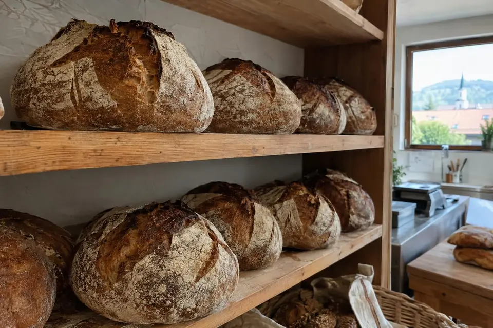
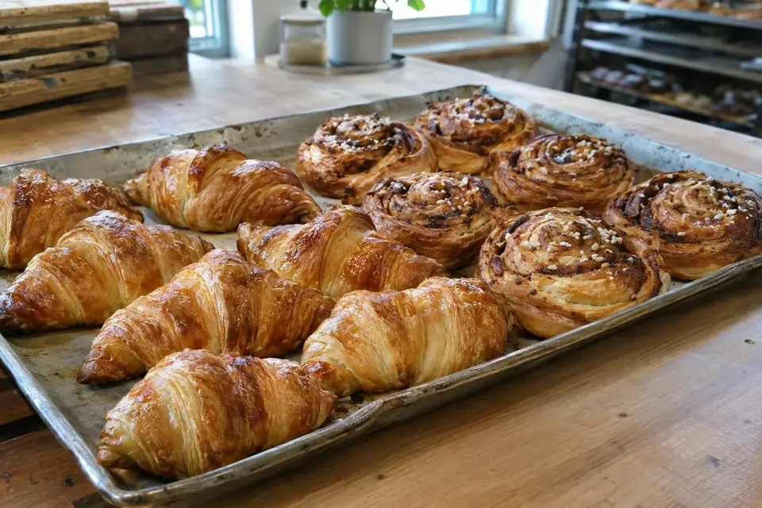
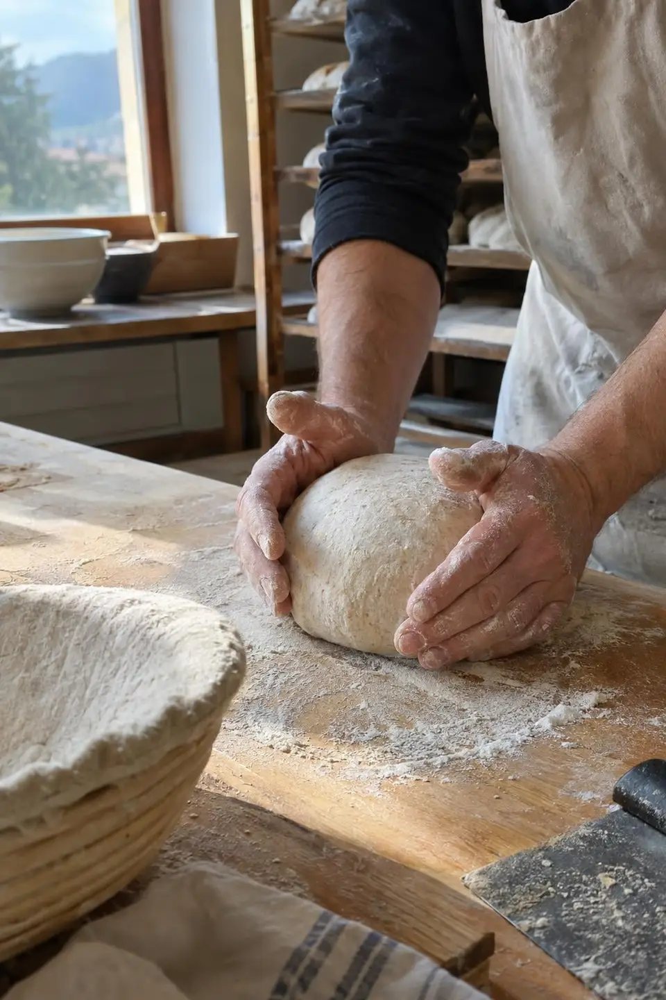

Šutna 30, Kamnik
Kruh z drožmi, ki vzhaja čez noč
Družinska pekarna na začetku stare ulice. Vse je ročno delo, brez aditivov in brez zamrznjenega testa.

Vsak dan v pekarni
Ob petkih in sobotah pečemo še orehovo potico in kvašene krofe.
Pirin kruh z drožmi
Rženi kruh

Rogljiček z maslom
Orehova potica
Polnozrnate žemlje
Cimetovi polži

Drožmi, ki jih gojimo sami
Kruh pečemo samo z drožmi in ga pustimo vzhajati čez noč, zato je bolj okusen in dlje ostane svež.
Moko kupujemo pri mlinu v bližini. Pečem jaz, v trgovini pa je večinoma moja žena Katja.
Jure Petekpek
Potica za praznike
Potico lahko naročite za praznike in praznovanja.
Pokličite ali pišite
Naročilo sprejmemo po telefonu ali e-pošti.
Najmanj dva dni prej
Toliko časa potrebuje testo, da vzhaja in se speče.
Prevzem v pekarni
Potico prevzamete na Šutni v času odprtja.
Kdaj smo odprti
- Pon–pet
- 6.30–18.00
- Sob
- 6.30–12.00
- Ned
- 7.00–10.00
Kje nas najdete
- Telefon
- +386 41 555 906
- E-pošta
- pekarna@pekarna-kvas.example
- Naslov
- Šutna 30
1241 KamnikNavodila za pot - Delovni čas
- Pon–pet
- 6.30–18.00
- Sob
- 6.30–12.00
- Ned
- 7.00–10.00